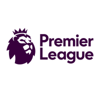

UEFA Champions League
A Champions League sempre reserva surpresas,
e nesta temporada não é diferente
Algumas equipes consideradas azarões
conseguiram surpreender,
enquanto outras favoritas enfrentaram desafios
inesperados.
As Semi-Finais ficou assim:
Premier League
O Manchester City lidera a Premier League, com uma vantagem significativa sobre os outros concorrentes. Eles estão buscando consolidar sua posição no topo e conquistar mais um título da liga inglesa.
Transferências e Rumores:
Kylian Mbappé:

Lionel Messi: